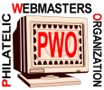

|
|
PWO JOURNAL
12th Edition. September 2009
This journal has the explicit goal of introducing our members and the visitors of our site to the life of our organization. All members are welcomed to collaborate in order to make their PWO Journal more interesting, attractive and actual.
High award for a PWO member
The site Bureaux français de l'empire ottoman (French postal offices in the Ottoman Empire) of our member Mr. Robert Désert was awarded the Academy Internet Award (Prix Internet de l'Académie) by the French Philatelic Academy. This award was created in 2001. Mr. Désert is the first philatelist who was awarded this price, in March 2002, counting for the year 2001. We congratulate our club colleague for this prestigious award!
More information can be found on the page:
http://mapage.noos.fr/academiephilatelie/mainprix.html
The latest development of our PWO
The PWO counts today 353 philatelic webmasters, who present 383 sites. These sites can be visited by starting from the list of PWO members.
The PWO experienced in the last years an important growth and counts among its members stamp collectors from all continents and of all levels of experience. Some very skillful philatelic webmasters have joined us, who are responsible for Web sites of important philatelic organizations and clubs. We have had the privilege to welcome among us some personalities from the philatelic and postal world (like members of philatelic academies, philatelic journalists or high postal authorities), but also representatives of different professions who achieved a high level of responsibility in their field (heads of research departments at big companies, a general of a division, etc.).
Our efforts
We organized a common Philatelic Webmastering event at the international philatelic exhibition EFIRO 2008 in Bucharest, Romania.
Logo Contest - Results
The big winner of the first and of the second place is our PWO member from the USA, Mr. Ron Rice. The third place goes to Mr. Max Derouen from France. Congratulation to the winner and thanks a lot to all participants. The new logo has already replaced the old one throughout the PWO site. We ask all PWO members to replace on their sites the old PWO logo with the winning design, and to link it to the PWO site ( http://pwmo.org )
| First Place (37 points) |
Second Place (35 points) |
Third Place (21 points) |
|
|
 |
If you wish to discuss the logos or other PWO related things, please make use of our Forum. It can be reached under http://www.values.ch/activeforum/login.asp
Members Pages
We have reworked and simplified the idea of members pages, shown now under the menu point: Members Gallery. We give our members the possibility to present themselves, on a short page, and to put on this page links to their best pages (no modification of these pages is required). Please choose the Members Gallery from the menu for more indications and for examples.
The French Version of the PWO site
Thanks to our member André Hurtré we have continued with the expansion of the French version of our site. We would also like to propose a Spanish version and for this reason we are searching for members who could help us with translations from English or from French in Spanish.
The fight against the illegal stamps
The PWO has intensified its fight against the illegal stamps, a fully new subsite of the PWO main site being dedicated to this action. Among the newest development we cite the publication of all UPU Circulars referring to illegal issues and the creation of the Philatelic Web Watch .
|
Created: 07/23/01. Revised:
08/21/09. Copyright © 2001- 2009 by PWO and by Victor Manta, Switzerland All rights reserved worldwide. |